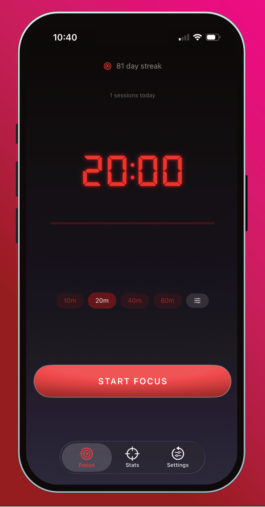
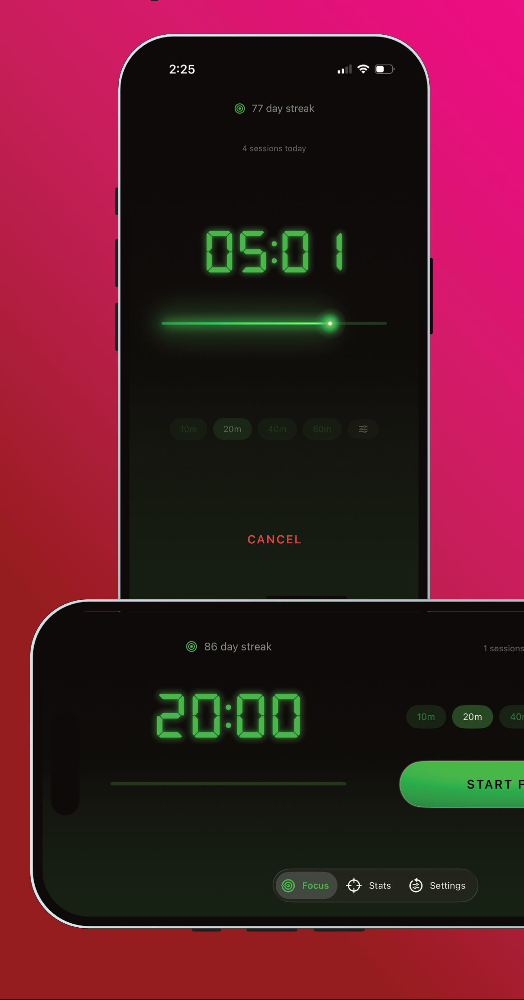
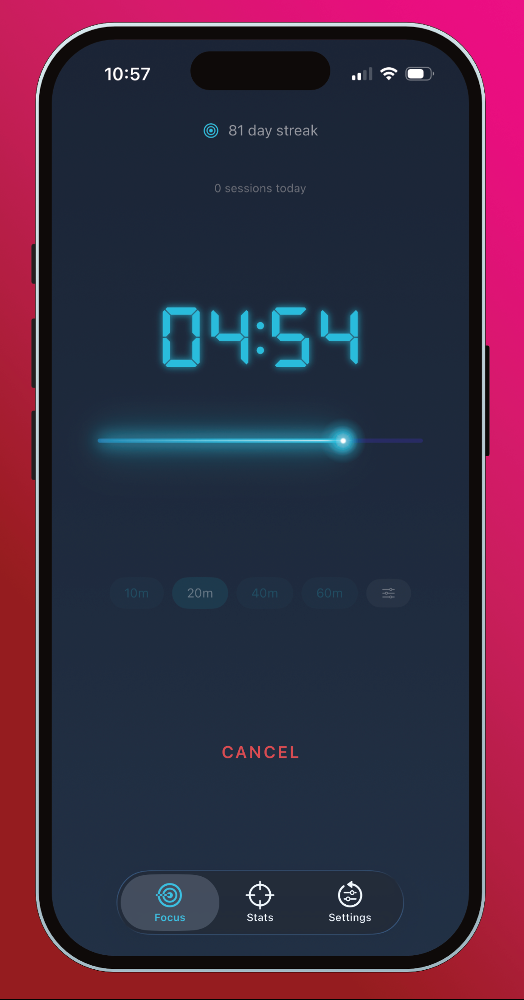
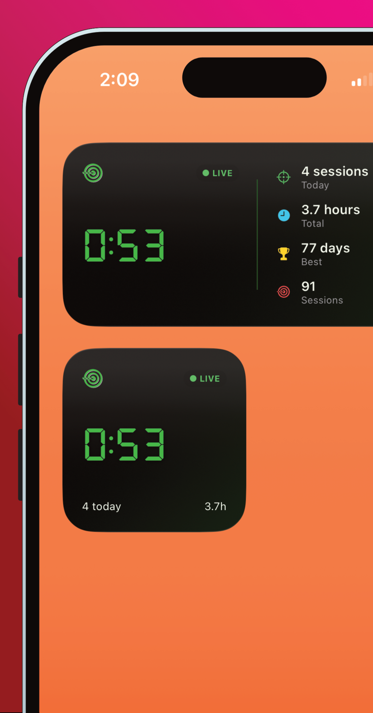
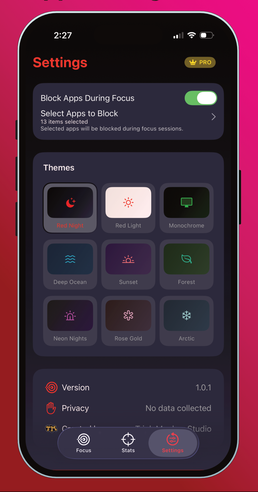
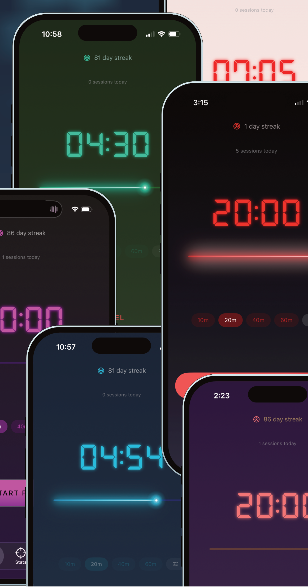

Focus Laser
A focus timer for iPhone built around one idea: once a session starts, the app should step back and let you work.
The Idea
Most focus apps fill the screen with buttons, stats and color that keep pulling your eyes back to the phone, which works against the reason you opened the app in the first place. I wanted block distractions without adding more. Focus Laser is quick to start, easy to read, and effective at blocking distracting apps. And with Live Activities and widgets, a focus session is always just a tap away.
Clean Interface in Any State



Focus Laser opens to a large digital timer above preset sessions and a custom option, and a bold Start Focus button. Everything is fully lit and easy to reach. The bold Start Focus button provides clear direction with intuitive preset session selection. Once a session begins, presets dim and the Start Focus gives way to a quiet Cancel, and a glowing laser line traces the session from start to finish. A simple glance tells you where you are without increasing cognitive load.
Focus Laser allows you to select which apps you would like to block during a focus session, giving you total control of what is considereed a distraction for your current session. Blocking apps by category or specific app name gives you the freedom to tailor each session to your desired focus state. Block social media and games while continuing to draft emails and create spreadsheets; or block all apps to set your focus elsewhere and prevent unwanted interruptions.

Features
- Preset sessions of 10, 20, 40 or 60 minutes, or a custom session times*
- A distraction-free focus screen with a glowing laser progress line
- Choose which apps to block during focus sessions
- Home and lock screen widgets and Dynamic Island Live Activities
- Color themes to fit your aesthetic and decor to help blend seamlessly into your work flow*
- Daily streaks, sessions today and total focus time
- Privacy first: TripleMonkey Studio does not collect, sell, or otherwise profit from user data


Need Help?
Setup guides, widget troubleshooting, subscriptions, and a way to reach me are all on the Focus Laser support page.